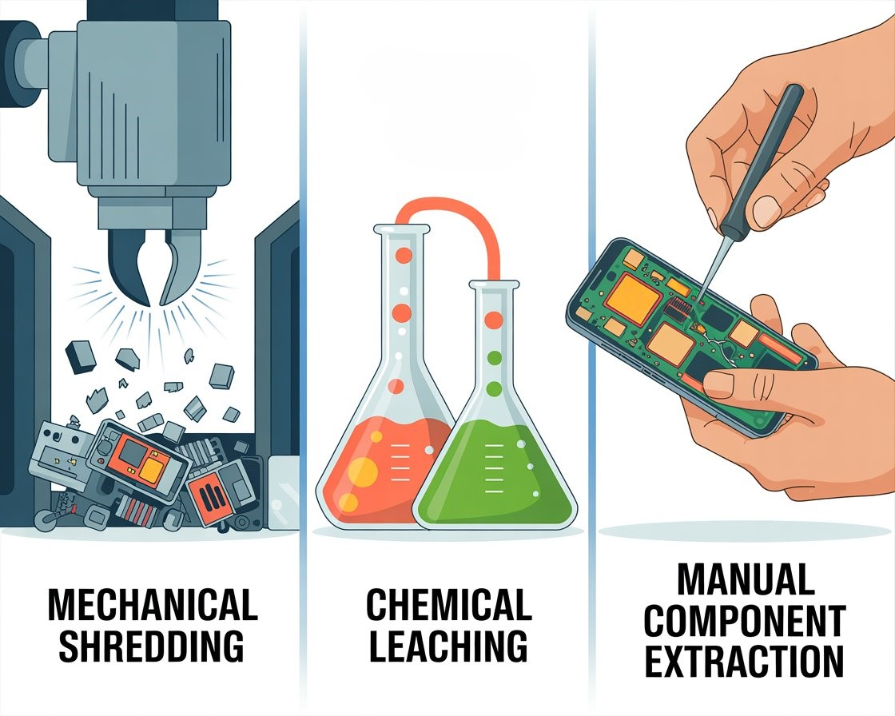

Comparison of E-Waste Recycling Methods
The three e-waste recycling methods discussed in the previous pages—mechanical shredding, chemical leaching, and manual component extraction —each offer distinct advantages and disadvantages depending on the goal of the process.
Mechanical Shredding
Pros:
- Fast processing: can handle large volumes of e-waste quickly, making it suitable for industrial scale recycling.
- Cost-efficient: requires less labor compared to manual methods, lowering operational costs.
- Material separation support: after shredding, metals and plastics can be separated using magnetic and density-based systems.
Cons:
- Material loss: valuable components can be damaged or mixed, reducing recovery purity.
- Hazardous dust and emissions: creates fine particles and potential toxic dust (like heavy metals or flame retardants).
- Low precision: cannot selectively preserve high-value or delicate electronic parts.

Chemical Leaching
Pros:
- High metal recovery efficiency: can extract precious metals like gold, silver, and palladium very effectively.
- Selective extraction: chemicals can target specific metals with high precision.
- Works on fine waste: useful for materials that are too small or complex for mechanical separation.
Cons:
- Environmental risk: uses toxic chemicals that can cause pollution if not handled properly.
- High treatment cost: requires safe handling, neutralization, and waste treatment systems.
- Health hazards: dangerous for workers if safety protocols are not strict.
Manual Component Extraction
Pros:
- High precision recovery: allows reuse of intact components like CPUs, RAM, and circuit boards.
- Lower contamination: minimal chemical or dust pollution compared to other methods.
- Supports reuse economy: parts can be refurbished and resold, extending product life.
Cons:
- Very slow process: not scalable for large volumes of e-waste.
- High labor cost: requires trained workers and is time-intensive.
- Safety risks: workers may still be exposed to hazardous materials like lead and mercury.
| Method | colonna | colonna | colonna | colonna | colonna | colonna |
| Mechanical Shredding | example | example | example | example | example | example |
| Chemical Leaching | example | example | example | example | example | example |
| Manual Extraction | example | example | example | example | example | example |
